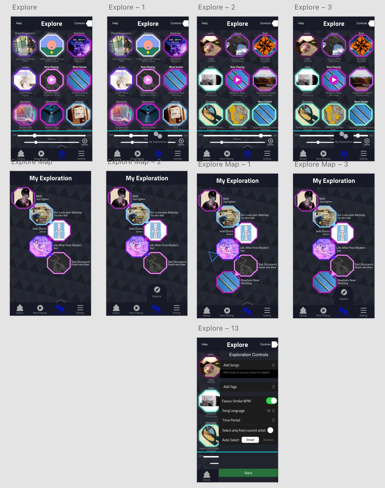

Origin
In October 2018, at the University of Calgary, I designed MusicSurf — an emotion-driven concept that organised songs by mood, genre and emotion in a network structure rather than as playlists. Full process: user interviews, paper prototypes, high-fidelity Adobe XD prototype. MusicSurf mapped music by how it feels.
Popified Networks asks the harder question underneath it: what if the network mapped the people — who actually made the record with whom? Moods are interpretive. Collaboration credits are fact.
I built a first working version in November 2023 — Python and Spotipy pulling from Spotify's API, data exported to JSON, rendered locally in Flask. Enough to prove the collaboration data existed and could be extracted. I came back in September 2026 and rebuilt it properly: structured Flask app, D3.js front end, OAuth login, a static public demo, and a privacy-first analytics pipeline.

The Problem
A playlist is a vertical list, and a list can only ever show you order. It cannot show you relationship. Two artists can sit forty rows apart and have made six songs together, and the interface will never tell you.
Collaboration builds careers, crosses audiences and defines scenes. Yet the record of who worked with whom exists only as credits on individual tracks — accurate, complete, and structurally invisible. Questions a label, manager, or journalist would reasonably ask have no tool behind them: who is this artist's real collaborative circle, including the tracks they appear on rather than headline? How connected is this roster to itself, and where are the gaps? What do these two artists share, specifically — and can you prove it? Today those get answered by memory or a manual discography trawl.
The Constraint That Defined the Product
Getting from "the collaboration data technically exists" to "a stranger can open a link and explore it" meant working around several hard platform limits. Each constraint became a design decision.
- Spotify apps are capped at 5 users in Development Mode. Extended Quota requires a registered business entity and roughly 250k MAU. Since May 2025, individuals aren't accepted. A login-first product would have reached five people on earth. Response: pre-build the graphs offline so the product delivers value with no account at all.
- Spotify has no "who has this artist worked with" endpoint. The core question the product answers can't be asked directly. Response: derive it — walk every track in a playlist, extract all credited artists, build edges from co-occurrence.
- Genre data was coarsened until a diverse playlist collapsed into around three buckets. A shipped feature became informationally worthless. Response: removed it (more on this below).
- Rate limits and batch-size caps on metadata lookups caused naive fetching to fail on large catalogues. Response: batched requests, retry with backoff, cached results.
The reframe that made everything possible: instead of asking Spotify for a collaboration graph it cannot produce, treat any playlist as the unit of analysis. A full discography, a label roster, a scene — all expressible as a playlist, all graphable. The limitation became the interface.
Where It Sits in the Market
The music discovery landscape splits into two fundamentally different things: credit data — a fact, these two names appear on this recording — and similarity data — an inference, these two names sound or feel adjacent. You cannot derive the first from the second, and this distinction determines whether a product could ever have answered the question this one asks.
MusicBrainz and Discogs do hold collaboration data, and MusicBrainz models it as a first-class relationship type. But both render it as hyperlinked text you walk one hop at a time — open a page, scan a list, follow a link, open another page. The gap isn't the data. It's the representation. Nobody joins credit data to a visual structure where the shape itself is the information.
Spotify was the right choice for three practical reasons: it returns artist photographs in the same API response as the credit data (the face-as-node decision only works because of this), it offers playback, and batch endpoints resolve hundreds of artists in a handful of requests. One reason has since expired: until February 2026, the API read any public playlist by ID. A platform change made that a 403 — the workflow is now copy the playlist to your own account first. The decision was correct when I made it; the platform moved underneath it.
The Architecture Decision
A login-first design would have served five people. The response: invert the funnel.
Nine playlists are pre-built offline by a Python script and published as static JSON. A visitor gets a 369-artist, 527-connection graph with no account, no redirect, and no quota. Login became a bonus for the few who have it — not a gate for everyone who doesn't. Around 85% of visits across the first five days never reached the login page, which is the clearest possible validation: a login-first architecture would have lost almost everyone.
Designing the Graph
The central visual decision: use the artist's photograph as the node. Recognition is instant and pre-verbal — you spot a face before you read a name. Node size encodes song count on the playlist; larger nodes are more prominent on that particular catalogue. Link thickness encodes shared song count; a thicker line means a denser collaboration. A green ring marks the main artist on discography-focused playlists — an anchor point that orients you before you interact with anything.
The palette is dark-first. The graph's content is artist photography — roughly 369 simultaneous images on the largest dataset. A dark canvas lets the photographs carry the colour while the chrome recedes. The design system lives as CSS custom properties, and a build script copies the app's real CSS into the published static demo so both front ends share one source and cannot drift apart.
What the Data Showed
The five-day dataset — 59 page views, 96 artist clicks, 21 song clicks, 6 Spotify opens — came from friends, not a marketing push. Engagement rates are flattered by that warm audience; someone who wants you to succeed tries harder than a stranger would. Drop-off points are what I trust: if a friendly audience still abandoned at a step, that step has real friction regardless of who's watching.
1.6 artist clicks per visit on the public demo. Clicking is entirely optional, so that number means people are genuinely exploring the graph rather than bouncing off it. Logged-in visits averaged 2.9 clicks — nearly double — which points at personal relevance as the stronger driver. Around 85% of visits never reached the login page, confirming the value-first architecture. The conversion from seeing to hearing had the most friction: 31% of artist clicks led to a song click, and 26% of those led to playback. The leading hypothesis is that the detail panel sits below the graph on mobile — the result of a tap may be entirely off-screen — and that playback requires an active Spotify device, leaving users without one at a dead end. Those are the two things I'd test first.
Killing a Feature That Worked
I shipped a genre mode — the same graph clustered by genre rather than by free-directed layout. It worked technically. I removed it. Spotify had coarsened its genre data to the point where an entire diverse playlist collapsed into around three buckets. The feature was technically working and informationally worthless. Removing something that runs but fails is harder than removing something that breaks, and it's the product decision in this project I'd most want to talk through.
Where This Goes
Strip out the music domain and this product is a relationship-mapping engine: take a set of entities, derive their connections from shared events, make the resulting structure explorable and provable. Artists and tracks are one instance of that pattern. The same model describes co-authors and papers, actors and films, companies and contracts, contributors and repositories — any domain where the relationships are implicit in the records but never assembled into a shape anyone can see. Music was the right first domain because the data is public, the relationships are dense, and I could tell immediately whether a result was true. It's a proving ground for the general problem, and that's the direction I'm taking this work.
Three things I'd change starting over: run five moderated usability sessions before touching any code; wireframe the responsive layout even for five minutes (the topbar at 320px was a hard-learnt lesson); and make clear from the first interaction that the links are clickable. The most interesting content in the product lives on those connections, and nothing in the current UI says so.